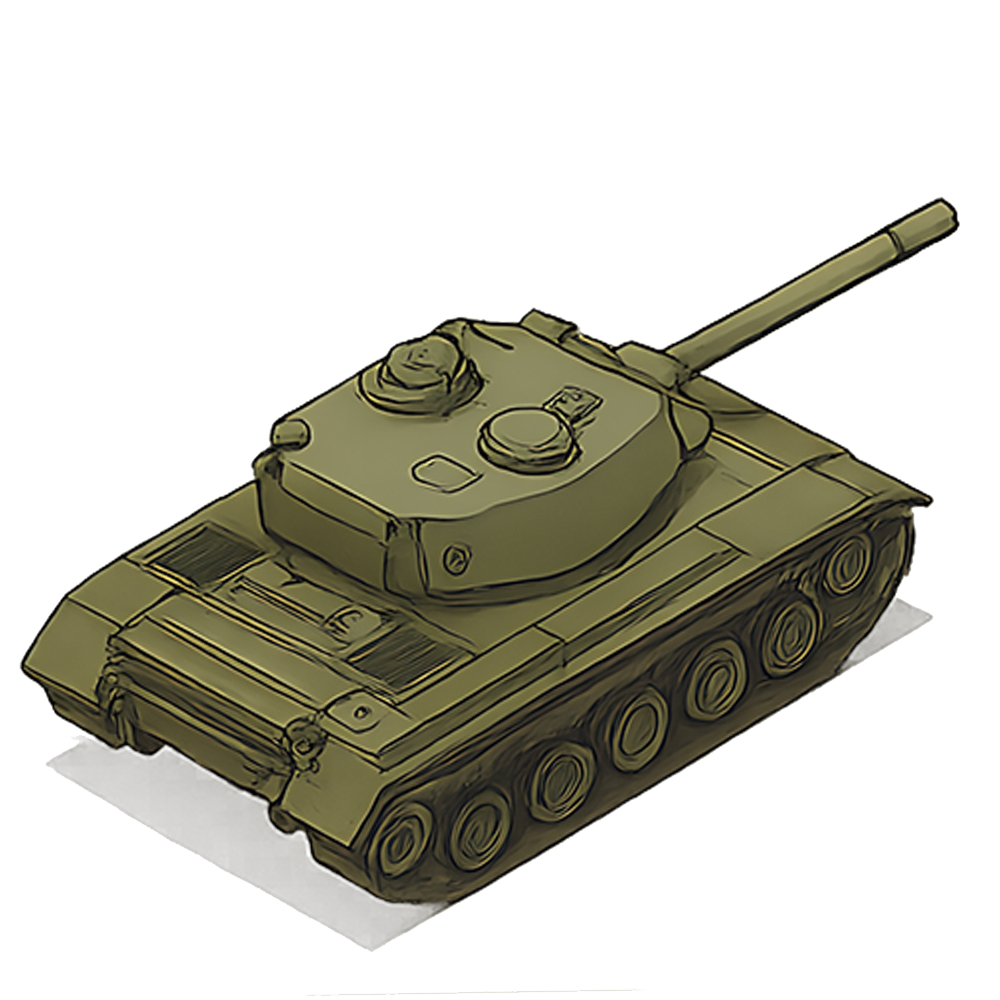
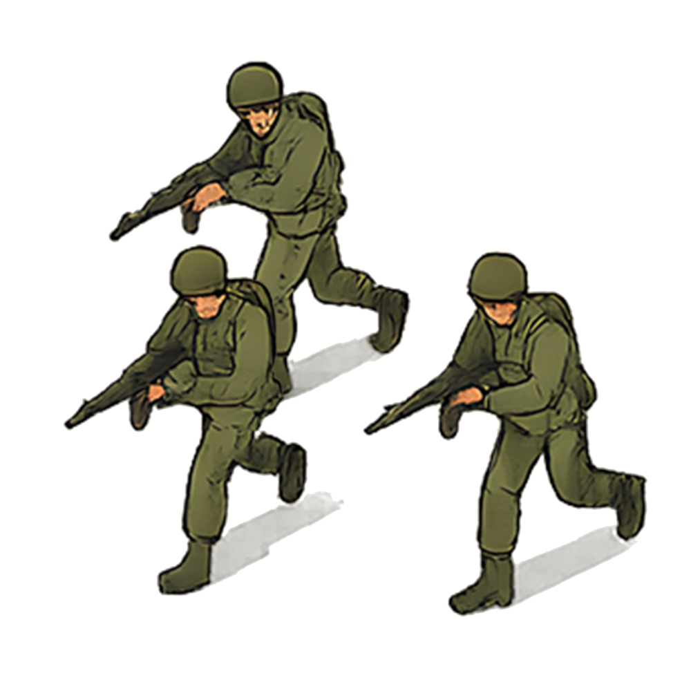
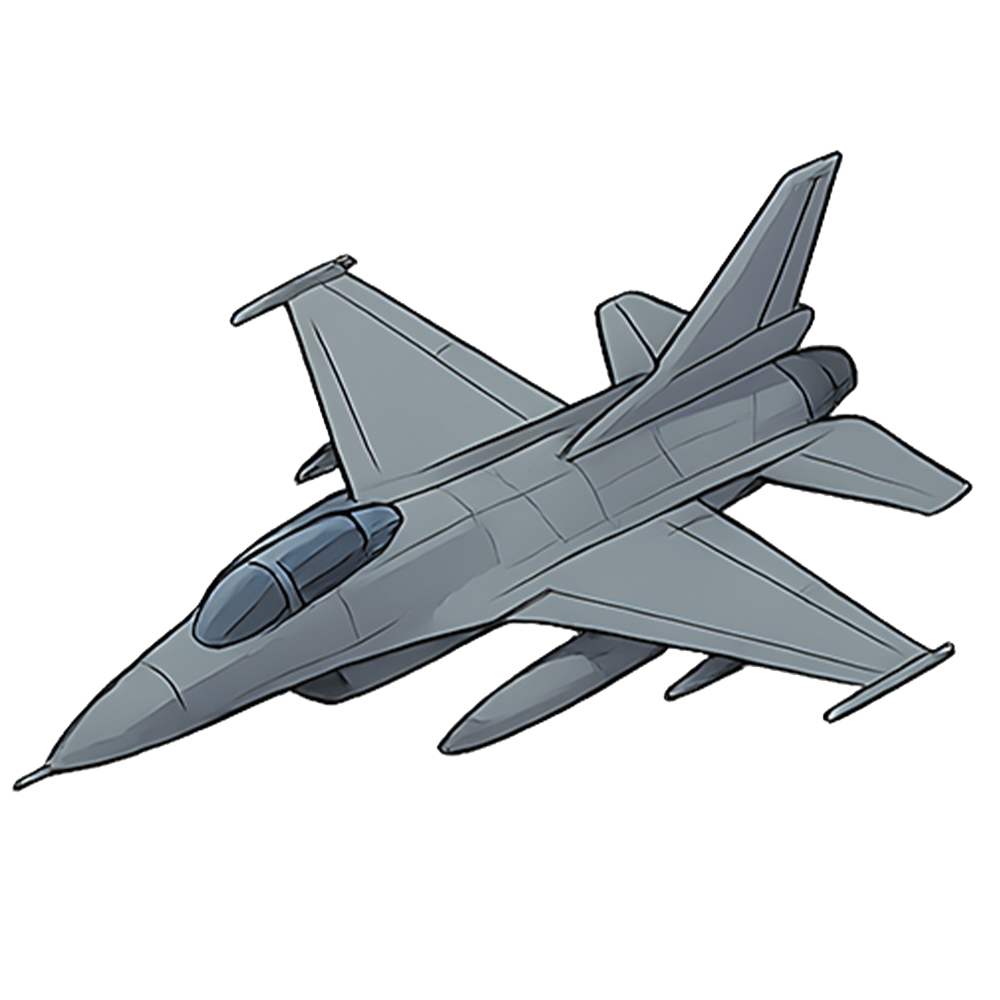

التحديدات الحالية
لا توجد تحديدات حتى الآن
تم العثور على المدينة
هل ترغب في إضافة المدينة إلى التحديدات؟
إضافة المدينة
إلغاء



المساحة الحالية
0 م² (0 كم²)
إضافة التحديد
حذف التحديد
هل تريد حفظ التعديلات؟
تم
إلغاء